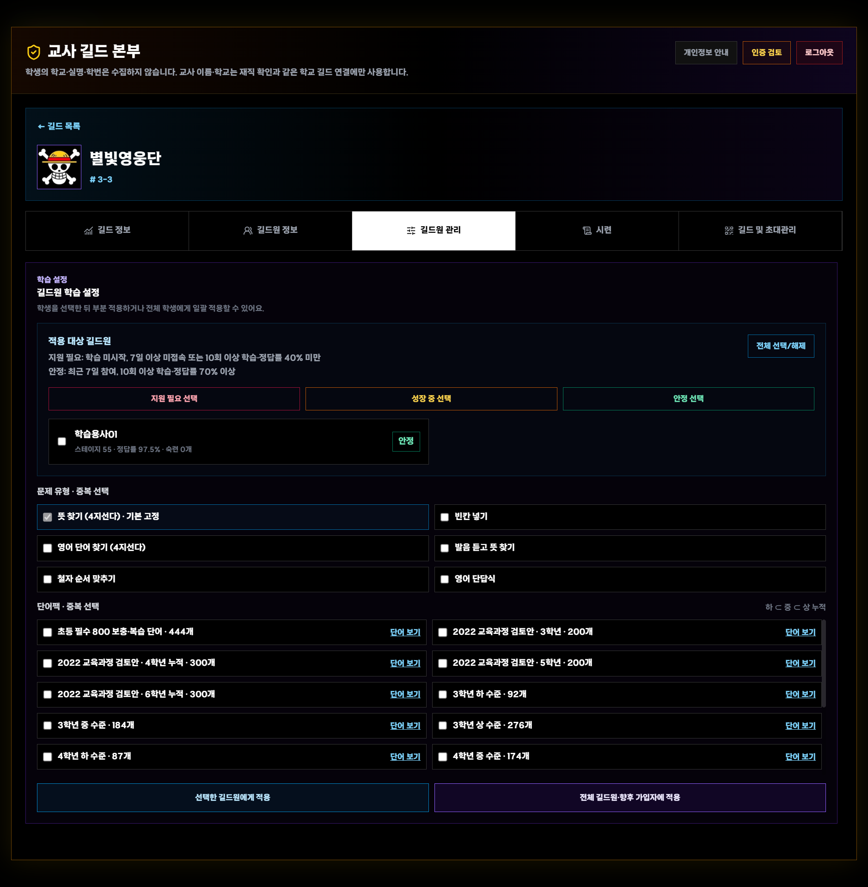
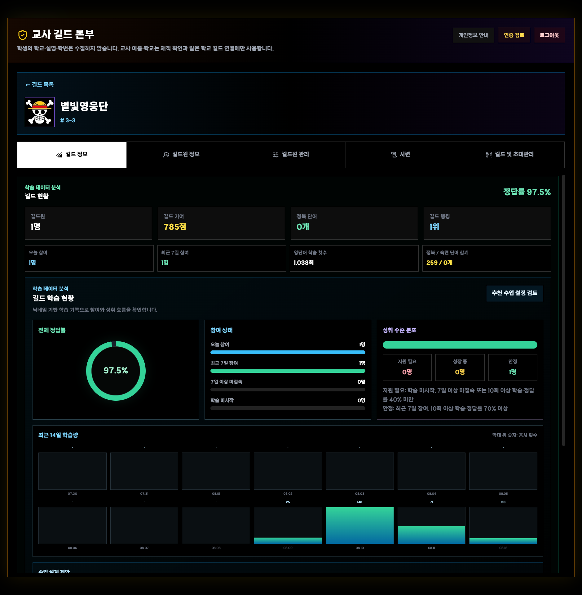
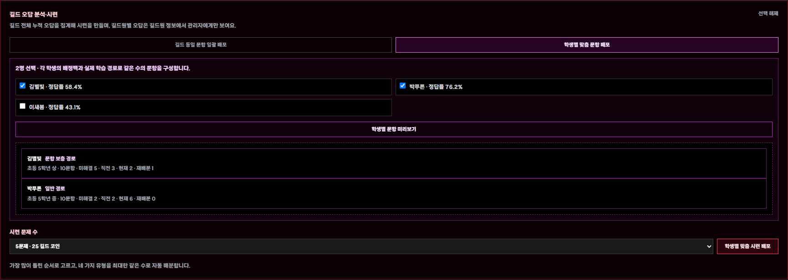

VOCA HERO!
교사
퀵가이드
가입과 재직 확인부터 길드 개설, 학생별 학습 배정, 데이터 분석과 오답 시련까지
6종영단어 문제 유형
개인·그룹·전체맞춤 학습 설정
5~20문제누적 오답 시련
가입과 재직 확인부터 길드 개설, 학생별 학습 배정, 데이터 분석과 오답 시련까지
길드 목록 → 길드 카드 → 길드원 관리

학생 이름은 자료용 예시 이름으로 익명화했습니다.
전체·향후 가입자 적용은 길드 기본 설정까지 함께 바꿉니다.
누적 단어팩 하나와 문제 유형 여러 개를 선택할 수 있습니다.
뜻 찾기는 기본 유형입니다. 단어팩은 2022 개정 영어과 기본 어휘 3,000개 기반의 표제어 3,001개를 초3~고3 하⊂중⊂상으로 누적합니다.


| 방식 | 교사가 볼 내용 | 활용 |
|---|---|---|
| 길드 공통 | 모든 학생에게 같은 문항 | 문항별 비교 |
| 개별 맞춤 | 학생별 배정팩·문항 경로 | 개별 향상 확인 |
| 수준별 선택 | 지원 필요·성장 중·안정 복수 선택 | 대상 일괄 구성 |
| 재도전 | 최대 3회·문제별 힌트 1회 | 첫 회차 100점도 완료 코인 동일 |
| 문제 | 확인 |
|---|---|
| 학생 설정이 기본값으로 보임 | 적용 학생 선택과 저장 완료 확인 → 학생 화면 새로고침 또는 앱 재실행 |
| 초대 코드 오류 | 영문·숫자 6자리와 코드 갱신 여부 확인 |
| 시련 생성 불가 | 뜻이 등록된 누적 오답 단어가 최소 5개인지 확인 |
| 데이터 반영 지연 | 새로고침 후 네트워크 상태 확인 |
| 휴대전화에서 작게 보임 | 가로 모드에서 확대하거나 PC·태블릿 사용 |